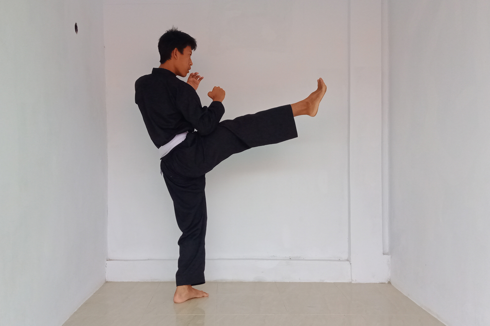

Tendangan Depan
Tendangan depan atau tendangan lurus adalah serangan yang menggunakan sebelah kaki dan tungkai, lintasannya ke arah depan dengan posisi badan menghadap ke depan, dengan kenaannya pangkal jari-jari kaki bagian dalam, dengan sasaran ulu hati. Dalam melakukan tendangan depan ada 3 tahapan yaitu; awalan sikap pasang mengangkat kaki , meluruskan kaki , akhiran manarik kembali kaki sampai kembali ke sikap pasang
